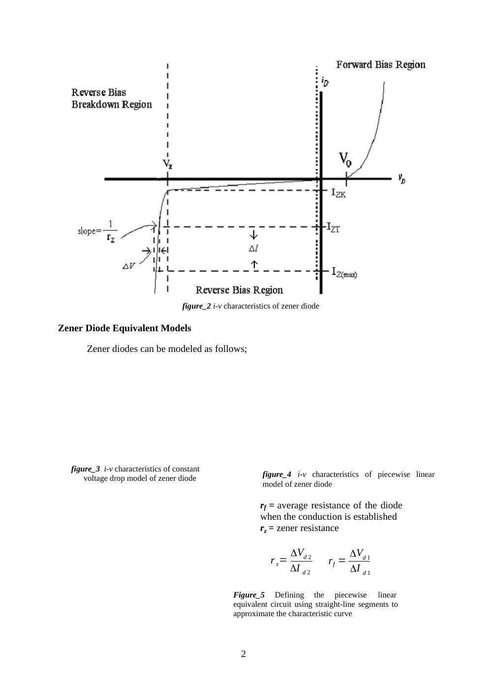
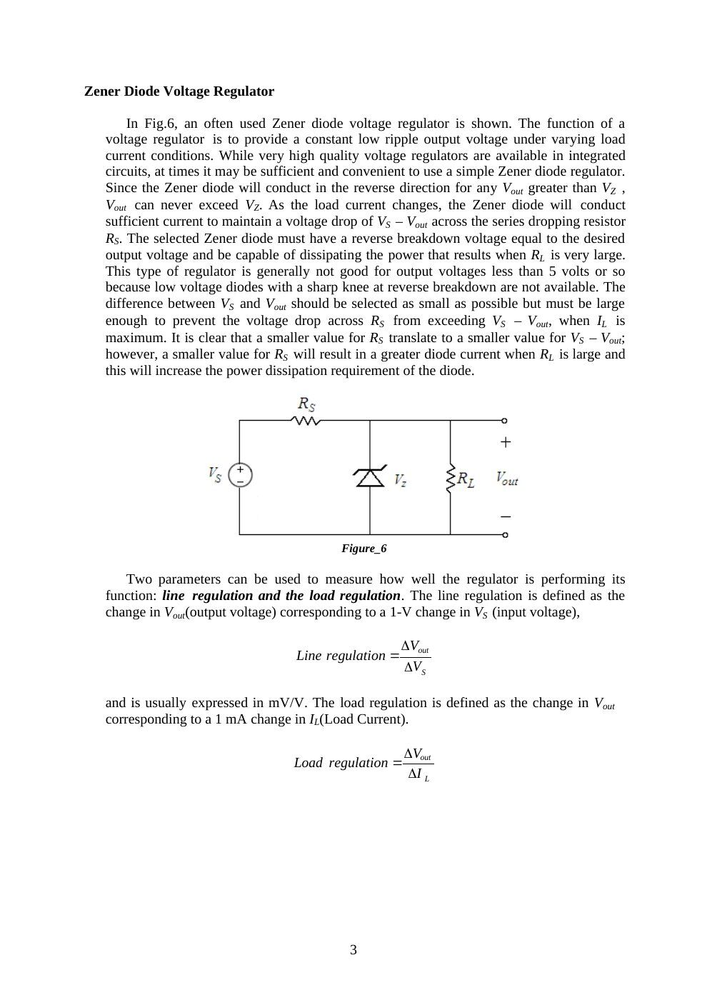

· EEM214
EEM214 Elektronik I: Zener Diyot Karakteristikleri ve Gerilim Regülatörü Deney Föyü
EEM214 – Elektronik I · 17.03.2015 · 18.10.2026
Bu yazı, Başkent Üniversitesi EEM214 Elektronik I laboratuvarının Zener Diode Characteristics & Zener Diode Voltage Regulator başlıklı Deney 5 föyüdür. Belgede hazırlayan ve tarih belirtilmemiştir; kaynak kopyası Mart 2015 tarihlidir. İngilizce deney yönergeleri aşağıda metne aktarıldı; Word belgesinden dönüştürülen PDF yazının sonunda indirilebilir. Bu deneyin önceki yıllardaki sonuçları Zener öğrenci raporları yazısındadır.
Aim and theory
The aim is to investigate the i–v characteristics of Zener diodes and their application to voltage regulation. A Zener diode is optimized for operation in the reverse breakdown region. In the forward direction it behaves as a normal diode.
Above the knee current I_ZK, the reverse characteristic is approximately a straight line. The specified Zener voltage is measured at a test current I_ZT: for example, a 6.8 V device may have this drop at 10 mA. Changes near the operating point obey:
- ΔV = r_z ΔI
- r_z = ΔV_d2 / ΔI_d2
- r_f = ΔV_d1 / ΔI_d1
The incremental or dynamic resistance r_z is the inverse slope of the characteristic at Q. Typical values in the handout range from a few ohms to a few tens of ohms. Smaller r_z gives more nearly constant voltage. Near the knee, r_z increases and regulation becomes poorer. The voltage, dynamic resistance, knee current and maximum power rating must all be considered.

Not: Word kaynağındaki bazı gömülü model çizimleri PDF dönüşümünde görünmüyor. Eksik çizimler tahminle tamamlanmadı; okunabilen karakteristik ve denklemler aktarıldı.
Voltage regulator
The circuit contains a source V_S, series resistance R_S, and a reverse-connected Zener in parallel with R_L. The aim is to keep V_out approximately constant as source voltage and load current change. The diode must support the desired output voltage and dissipate the power occurring at large R_L. A smaller R_S improves the available load current but increases the diode current and dissipation at light load.
- Line regulation = ΔV_out / ΔV_S, usually expressed in mV/V.
- Load regulation = ΔV_out / ΔI_L, usually expressed in mV/mA.

Not: Föy, ideal modele dayanarak çıkışın V_Z’yi aşamayacağını söylüyor. Gerçek diyotta r_z sıfır olmadığından çıkış gerilimi akımla bir miktar değişir; aynı föyün ΔV = r_z ΔI bağıntısı bunu ifade eder.
Preliminary work
- Review textbook sections 3.6 and 3.12.
- Construct the circuit of Figure 7 in PSpice with R = 1 kΩ and a 1N750 Zener. Sweep V_in from −20 V to +10 V and plot diode current against diode voltage. Change the graph’s horizontal variable to the diode voltage.
- Briefly describe the difference between a Zener diode and a standard diode.
- For the regulator of Figure 6, use V_Z = 6.8 V at I_ZT = 5 mA, r_z = 20 Ω, I_ZK = 0.2 mA, and a nominal supply V_S = 10 V varying by ±1 V. Find the model’s Zener voltage; V_out with no load and R_S = 0.5 kΩ; the output change for the supply variation; the output change after connecting R_L = 2 kΩ; V_out at R_L = 0.5 kΩ; and the minimum R_L for which breakdown operation continues.
- Read the experimental procedure.
Part I: Zener diode test
Check the diode with the DMM’s diode function. For a Zener voltage above the meter’s test voltage, forward connection acts like a normal silicon diode and reverse connection appears as high resistance. Record the displayed forward and reverse values and decide whether the device is good or defective.
The handout gives a forward reading of 0.500–0.900 V and describes a blinking “000.0” in reverse connection.
Not: Ters yöndeki ekran gösterimi multimetre modeline bağlıdır; “000.0” ifadesi bütün ölçü aletlerine genellenemez.
Part II: Forward and reverse characteristics
Use R = 330 Ω and a BZX55C 6.2 V Zener. Increase the supply until the measured forward diode voltage reaches each target; record actual voltage and current.
| Target diode voltage (V) | Measured voltage (V) | Measured current (mA) |
|---|---|---|
| 0.35 | ||
| 0.45 | ||
| 0.55 | ||
| 0.60 | ||
| 0.65 | ||
| 0.70 | ||
| 0.75 | ||
| 0.80 |
Reverse the diode and record V_Z and I_Z for applied voltages 3.5, 4, 4.5, 5, 5.5, 6, 6.5, 7, 7.5, 8, 9, 10, 11, 12, 13, 14 and 15 V. Plot the complete i–v curve on graph paper or in Excel and label its operating regions.
Part III: Zener regulator
- Construct the regulator with BZX55C and R_S = 390 Ω.
- Measure stabilized V_out at V_S = 12 V and 8 V, first with R_L = 820 Ω, then with 330 Ω.
- Repeat for R_S = 620 Ω and 100 Ω.
| R_S | V_S = 12 V, R_L = 820 Ω | V_S = 12 V, R_L = 330 Ω | V_S = 8 V, R_L = 820 Ω | V_S = 8 V, R_L = 330 Ω |
|---|---|---|---|---|
| 620 Ω | ||||
| 390 Ω | ||||
| 100 Ω |
For all twelve combinations:
- Calculate load current I_L and Zener current I_Z.
- Calculate line regulation at each fixed R_L, then load regulation at each fixed V_S.
- Identify cases where I_Z approaches zero and regulation is lost. In this condition V_out depends on V_S, R_S and R_L rather than the breakdown voltage.
- Calculate P_Z and P_RS; compare with the components’ maximum ratings.
- Predict the voltage across a Zener accidentally reversed in the regulator.
- Decide which R_S gives the best overall regulation and explain the other cases.
The handout’s finite-difference expressions are:
- Line regulation = 1000(V_out,max − V_out,min)/(V_S,max − V_S,min), at constant R_L, in mV/V.
- Load regulation = (V_out,max − V_out,min)/(I_L,max − I_L,min), at constant V_S, in mV/mA when consistent units are used.
Equipment and result sheet
Breadboard, multimeter, DC power supply; one BZX55C 6.2 V Zener and resistors of 100 Ω, 390 Ω, 620 Ω, 330 Ω and 820 Ω. The final page repeats the forward, reverse and regulator tables as a blank result sheet.